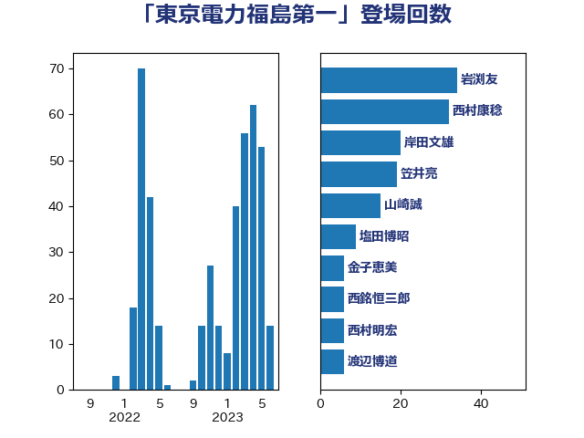

単語「東京電力福島第一」

| 岩渕友 | 日本共産党 | 34 回 |
| 西村康稔 | 自由民主党 | 32 回 |
| 岸田文雄 | 自由民主党 | 20 回 |
| 笠井亮 | 日本共産党 | 19 回 |
| 山崎誠 | 立憲民主党 | 15 回 |
| 塩田博昭 | 公明党 | 9 回 |
| 金子恵美 | 立憲民主党 | 6 回 |
| 西銘恒三郎 | 自由民主党 | 6 回 |
| 西村明宏 | 自由民主党 | 6 回 |
| 渡辺博道 | 自由民主党 | 6 回 |
| 阿部知子 | 立憲民主党 | 5 回 |
| 里見隆治 | 公明党 | 5 回 |
| 足立康史 | 日本維新の会 | 5 回 |
| 舩後靖彦 | れいわ新選組 | 4 回 |
| 末松信介 | 自由民主党 | 4 回 |
| 山口壯 | 自由民主党 | 4 回 |
| 枝野幸男 | 立憲民主党 | 3 回 |
| 星野剛士 | 自由民主党 | 3 回 |
| 庄子賢一 | 公明党 | 3 回 |
| 岸真紀子 | 立憲民主党 | 3 回 |
| 小池晃 | 日本共産党 | 3 回 |
| 太田房江 | 自由民主党 | 3 回 |
| 高橋はるみ | 自由民主党 | 2 回 |
| 高市早苗 | 自由民主党 | 2 回 |
| 萩生田光一 | 自由民主党 | 2 回 |
| 菅直人 | 立憲民主党 | 2 回 |
| 竹詰仁 | 国民民主党 | 2 回 |
| 秋葉賢也 | 自由民主党 | 2 回 |
| 福島伸享 | 無所属 | 2 回 |
| 畦元将吾 | 自由民主党 | 2 回 |
| 杉田水脈 | 自由民主党 | 2 回 |
| 徳永久志 | 無所属 | 2 回 |
| 山添拓 | 日本共産党 | 2 回 |
| 吉田とも代 | 日本維新の会 | 2 回 |
| 中野洋昌 | 公明党 | 2 回 |
| 鬼木誠 | 立憲民主党 | 1 回 |
| 馬場伸幸 | 日本維新の会 | 1 回 |
| 青木愛 | 立憲民主党 | 1 回 |
| 青山大人 | 立憲民主党 | 1 回 |
| 阿達雅志 | 自由民主党 | 1 回 |
| 長島昭久 | 自由民主党 | 1 回 |
| 長峯誠 | 自由民主党 | 1 回 |
| 長友慎治 | 国民民主党 | 1 回 |
| 野田国義 | 立憲民主党 | 1 回 |
| 赤羽一嘉 | 公明党 | 1 回 |
| 菅家一郎 | 自由民主党 | 1 回 |
| 若松謙維 | 公明党 | 1 回 |
| 緑川貴士 | 立憲民主党 | 1 回 |
| 神谷裕 | 立憲民主党 | 1 回 |
| 石井章 | 日本維新の会 | 1 回 |
| 石井正弘 | 自由民主党 | 1 回 |
| 田名部匡代 | 立憲民主党 | 1 回 |
| 水岡俊一 | 立憲民主党 | 1 回 |
| 櫛渕万里 | れいわ新選組 | 1 回 |
| 横山信一 | 公明党 | 1 回 |
| 林芳正 | 自由民主党 | 1 回 |
| 松野博一 | 自由民主党 | 1 回 |
| 本田太郎 | 自由民主党 | 1 回 |
| 志位和夫 | 日本共産党 | 1 回 |
| 平林晃 | 公明党 | 1 回 |
| 平木大作 | 公明党 | 1 回 |
| 岩田和親 | 自由民主党 | 1 回 |
| 山本剛正 | 日本維新の会 | 1 回 |
| 山下芳生 | 日本共産党 | 1 回 |
| 宮本徹 | 日本共産党 | 1 回 |
| 宮崎勝 | 公明党 | 1 回 |
| 宮口治子 | 立憲民主党 | 1 回 |
| 奥下剛光 | 日本維新の会 | 1 回 |
| 大島九州男 | れいわ新選組 | 1 回 |
| 堀内詔子 | 自由民主党 | 1 回 |
| 吉良よし子 | 日本共産党 | 1 回 |
| 佐藤啓 | 自由民主党 | 1 回 |